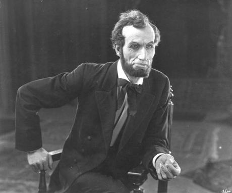
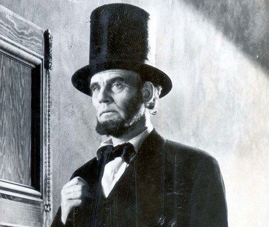
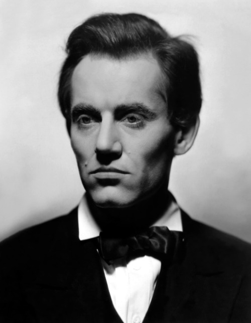
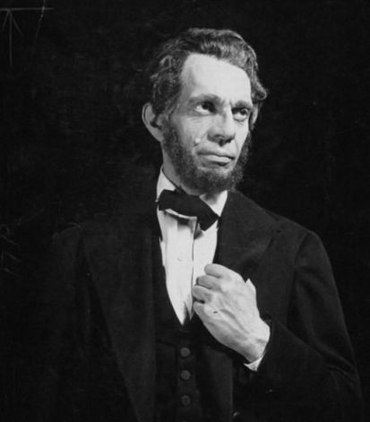
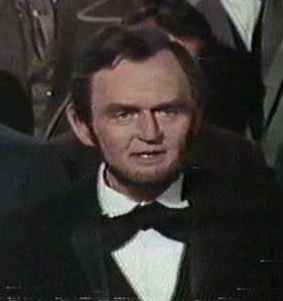
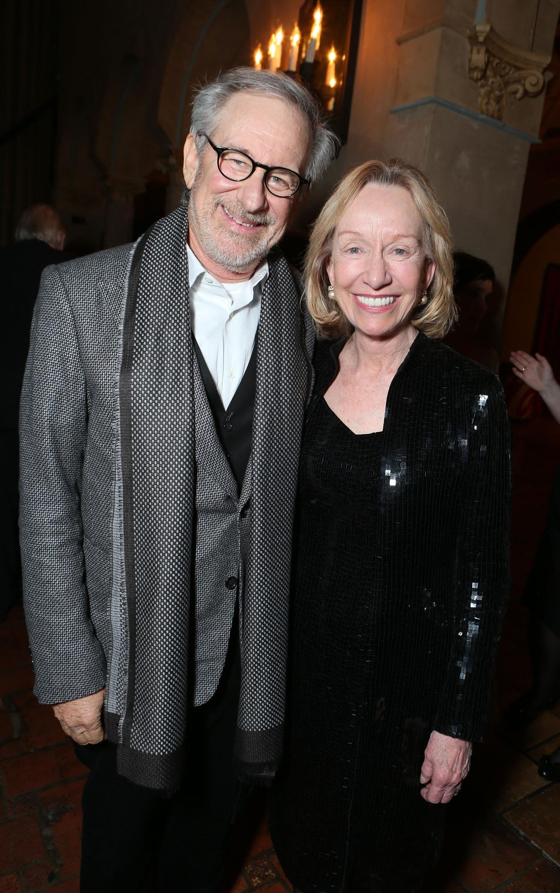
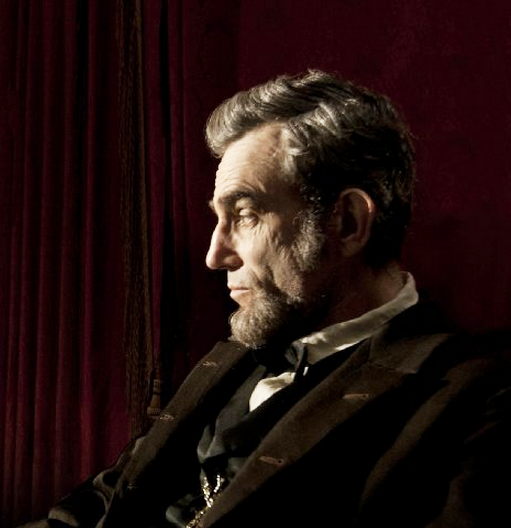
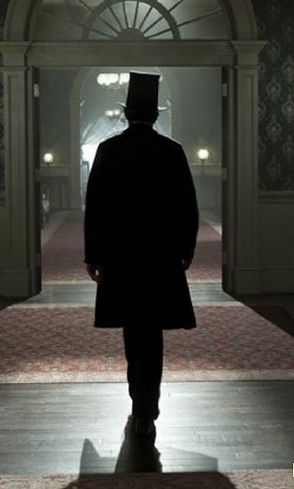

|
When John Ford first asked Henry Fonda to play Lincoln, the actor said no. "I can't play
Lincoln. That's like playing God," he explained. "You're thinking of the Great
Emancipator," responded the director. "This is the jack-legged lawyer from Springfield."
Fonda relented, and the result was Young Mr. Lincoln (1939), the best film ever
made about Lincoln--until now.
Steven Spielberg's Lincoln both overturns a century of cinematic portrayals of
the 16th president of the United States and challenges a decades-long scholarly, if not
|

Joseph Henabery as Lincoln
|
popular, vision of him as halfhearted and reluctant in his efforts to eradicate slavery.
Daniel Day-Lewis doesn't just portray Lincoln, he inhabits him, giving us not a stick
figure but a beleaguered leader whose crafty political genius leads to passage of the 13th
Amendment, abolishing slavery. The film restores for our time a vision of Lincoln as a
tireless opponent of slavery and, in the process, speaks to the political problems we face
as a nation today.
The most important films on historical topics have always been tied to cultural
moments, shaping and revealing assumptions about the past. None, of course, has been more
controversial than The Birth of a Nation (1915), D.W. Griffith's silent film about
the Civil War and Reconstruction. President Woodrow Wilson supposedly described it as like
"writing history with lightning."
That film is remembered for its second part, which made heroes of white Southern
Klansmen "protecting" themselves against radicals and blacks. The less frequently
discussed first part offers a portrait of Lincoln (played by Joseph Henabery, who had a
long career as a director). There is no reference to Lincoln as an emancipator; rather, he
is a friend of the South, whose assassination, depicted in the film, removes his
"fostering hand" from the process of Reconstruction.
Griffith came back to Lincoln 15 years later for Abraham Lincoln (1930). It
remains the only biopic that attempts to cover the president's life in its entirety.
Played by Walter Huston, from a script co-written by the poet and novelist Stephen Vincent
Benet, Lincoln is a man of great physical strength, self-deprecating humor, paralyzing
melancholy, and deep ambition. Much is made of his early life, particularly his love for
the doomed Ann Rutledge. Once we arrive at the Civil War, slavery is barely mentioned. The
|

Walter Huston as Lincoln
|
theme of Lincoln's life is that the Union must be preserved, an aphorism stated
repeatedly. Griffith reprises the vision of Lincoln as great reconciler. As the war nears
its end he says, "I shall deal with them as if they had never been away."
Griffith was from Kentucky, and his nostalgia for the Old South fit with a general
shift in historical literature focusing not on the moral issue of slavery but on the lost
glory of Southern life. Sympathetic to the South, some scholars, like Charles W. Ramsdell,
blamed Lincoln for starting the war.
But in the popular imagination during the 1930s, as Americans suffered through the
Depression, Lincoln was seen as a man of the people and became an object of veneration.
President Herbert Hoover, another Republican, invoked Lincoln repeatedly, but so too did
President Franklin Delano Roosevelt, a Democrat, who used Lincoln to remind Americans of
the challenge to preserve "a people's government for a people's good." Carl Sandburg's
four-volume Abraham Lincoln: The War Years, which appeared in 1939, portrayed a
folk hero whose uncanny leadership maintained American democracy through unprecedented
conflict, a message not lost on Roosevelt as he faced a mounting crisis in Europe.
Filmmakers and playwrights, however, avoided Lincoln's years in the presidency,
choosing instead to allude to cultural anxieties over democracy and totalitarianism
|

Henry Fonda as Lincoln
|
indirectly, through reverence for a Lincoln who fought for justice.
The genius of Ford's Young Mr. Lincoln, justly celebrated as a masterwork of
American cinema, is visual as much as narrative. As the critic Geoffrey O'Brien observed a
few years ago, "Ford seeks a cinematic language fit for democratic myth." Of less
importance than what Henry Fonda says as Lincoln is how he looks, how he is framed by the
camera. He always seems alone, even when in a crowd. He stares away, but viewers cannot
take their eyes off of him. This is Lincoln as icon, foreshadowing Lincoln as monument.
The film ends with a portent of what is ahead as Lincoln walks up a hill through a
lightning storm toward his destiny.
Although Abe Lincoln in Illinois (1940), based on a Pulitzer Prize-winning play
by Robert E. Sherwood, also stays grounded in New Salem and Springfield, Ill., it is the
first film to deal with slavery directly. Lincoln denounces the "monstrous injustice of
slavery" and delivers his "House Divided" speech ("a house divided against itself cannot
stand") at the state Capitol as he accepts the Republican nomination to run for the Senate
against Stephen A. Douglas. He is shown declaring that a nation cannot permanently endure
"half-slave and half-free"--and also, in debates with Douglas, arguing against racial
equality.
Raymond Massey's performance is not nearly as compelling as Fonda's, but it also
conveys the dualism of Lincoln's character: mirth and misery. Despite some well-composed
scenes by the director, John Cromwell, the effect is achieved here not by showing but by
telling: Lincoln is "in one of his gloomy moods," someone says. "I want to be left alone,"
|

Raymond Massey as Lincoln
|
the man himself declares.
And so he would be, for the most part, until now. To be sure, cultural depictions of
Lincoln have remained omnipresent. They include the television miniseries Sandburg's
Lincoln, in 1974, which featured Hal Holbrook as Lincoln (in Spielberg's film,
Holbrook plays Francis Preston Blair Sr., an adviser to the president known as "Lincoln's
conservative"), and Lincoln, in 1988, with Sam Waterston in the title role. Anyone
who came of age in the 1980s is likely to recall the Lincoln who appeared in Bill &
Ted's Excellent Adventure (1989) and declares at the end, "Party on, dudes." Yet
neither those television shows nor the assorted other sightings of Lincoln in popular
culture did anything to restore the president to the prominence he held in the 1930s as an
exemplar for the times.
The decline in interest can be attributed to several factors. The civil-rights movement
focused attention not on emancipation but on the disappointing results of freedom:
poverty, disenfranchisement, segregation. Martin Luther King Jr. paid homage to Lincoln at
the beginning of his "I Have a Dream" speech," delivered in 1963 at the Lincoln Memorial,
but lamented that a century after emancipation, "the Negro still is not free." Others were
less generous to the Great Emancipator. In a magazine article in 1968, and again in his
2000 book Forced Into Glory: Abraham Lincoln's White Dream, Lerone Bennett Jr.,
executive editor of Ebony, denounced Lincoln as a racist and white supremacist
whose actions against slavery were dilatory and halfhearted at best.
Parallel to the civil-rights movement was a shift in scholarly focus away from elites
and toward the social history of ordinary people. Historians examined the lives of the
enslaved and began to grasp the role they played in shaping their own destiny. That trend
culminated in the 1990s with the Freedmen and Southern Society Project, which began in the
1970s and, over the decades, has unearthed tens of thousands of documents and published
multiple volumes that have revolutionized our understanding of the lives of
African-Americans in slavery and freedom. The voices of the supposedly inarticulate were
being heard.
As the focus shifted to slaves and their experience in the Civil War, Lincoln and the
role of political elites came under new scrutiny. Some scholars argued that Lincoln did
not free the slaves; rather, the slaves emancipated themselves by taking advantage of the
chaos of war and running away. Lincoln, the story emphasized, issued an Emancipation
|

Hal Holbrook as Lincoln
|
Proclamation that applied only to those slaves who had not been reached by Union armies
and that did not touch slavery in areas under military control, nor in the four slave
states that remained in the Union. That was taken as proof of his lack of conviction.
Furthermore, the document was stingy in its expression of abolitionist faith.
Criticism of the proclamation's prose was present from the start: One official in 1862
said it was "written in the meanest and most routine style." On the cusp of the
civil-rights movement, the condemnation returned: The historian Richard Hofstadter
proclaimed that the Emancipation Proclamation "had all the moral grandeur of a bill of
lading."
And so the powerful story of Lincoln and emancipation dwindled, a casualty of changing
times as well as shifting assumptions.
Only recently has the narrative regained vitality. The years leading up to and
following the Lincoln bicentennial, in 2009, yielded a wealth of new studies that provided
fresh perspectives. Gone was the hagiography that characterized much of the writing of
earlier generations. Instead, a more fully realized Lincoln emerged, one that emphasized
the man's greatness.
Doris Kearns Goodwin's 2005 Team of Rivals: The Political Genius of Abraham
Lincoln (the basis for Spielberg's film) highlighted Lincoln's leadership and skill at
bringing his competitors into his cabinet. James M. McPherson's Tried by War: Abraham
Lincoln as Commander in Chief (2008) offered new insights into the president's
development as a shrewd military man. Harold Holzer co-chaired the Abraham Lincoln
Bicentennial Commission and brought out a steady stream of books, including Lincoln
President-Elect: The Great Secession Winter 1860-1861 (2008), which illuminated
Lincoln's political craftiness. Allen C. Guelzo also produced numerous books, including
|

Doris Kearns-Goodwin and Steven Spielberg
|
Lincoln's Emancipation Proclamation: The End of Slavery in America (2004) and
Lincoln: A Very Short Introduction (2009), which reemphasized Lincoln's antislavery
credentials. Eric Foner's The Fiery Trial: Abraham Lincoln and American Slavery
(which won the 2011 Pulitzer Prize for History) explored how Lincoln's views of slavery
changed--and steadily grew closer to that of the Radicals. All helped restore Lincoln to a
position of prominence.
But he has also remained a target. Libertarian pundits have denounced Lincoln as a
dictator and a tyrant who abused the authority of his office and ushered in the
bureaucratic, regulatory state they despise. Works by the economists Thomas J. DiLorenzo
(The Real Lincoln: A New Look at Abraham Lincoln, His Agenda, and an Unnecessary
War, 2002) and Charles Adams (When in the Course of Human Events: Arguing the Case
for Southern Secession, 2000), for example, have sold well and appeal to those less
interested in the problem of emancipation than in the problem of big government.
Lincoln the statist plays an important role in Spielberg's film. The president
justifies the use of war powers that give him broad authority to act, and he will stop at
nothing in his relentless effort to win passage of the 13th Amendment. "I am the president
of the United States, clothed in immense power, and you will procure me these votes!" he
demands at one point. Tony Kushner's screenplay brings Lincoln to the edge of tyrannical
rule (his Democratic opponents certainly view him as a dictator) but then pulls back.
Sandburg famously described Lincoln as a "man of both steel and velvet." There is plenty
of steel to go around in the film, but it is the velvet that captivates.
Lincoln is nothing if not a Shakespearean tragedy. (Lincoln himself, a great admirer of
the Bard, would have appreciated that.) We get not only a doomed, ambitious hero with whom
we identify, but also domestic drama (Sally Field captures the often difficult yet
sympathetic Mary Todd Lincoln, an "anti-Lady Macbeth," as one reviewer calls her) and
well-timed comic interludes (James Spader plays the political operative W.N. Bilbo, a
Falstaffian character).
Daniel Day-Lewis was initially offered his part in 2003 and kept turning it down until
he felt he could overcome his reverence for Lincoln enough to portray him. The wait was
well worth it. The actor summons Lincoln from the dead. His high-pitched tenor captures
|

Daniel Day-Lewis as Lincoln
|
the voice described by contemporaries, as do the sadness in the eyes and the grin when he
tells yet another story. This Lincoln is simultaneously melancholy and merry, despairing
and determined. This Lincoln is fully human.
No actor has done more than the British-born Day-Lewis to bring American historical
characters, fictional and real, to life on the screen: Hawkeye in The Last of the
Mohicans (1992), Newland Archer in The Age of Innocence (1993), John Proctor in
The Crucible (1996), Bill (the Butcher) Cutting in Gangs of New York (2002),
and Daniel Plainview in There Will Be Blood (2007). But Lincoln was something
different. "I never, ever felt that depth of love for another human being I never met,"
Day-Lewis recently told an interviewer.
But for a contrived opening scene (white and black soldiers reciting the Gettysburg
Address to the president) and an inability to decide where to end (there are at least four
denouements), Spielberg's directorial vision has never been more spare and precise. The
film conjures Lincoln's world, down to the ticking of his actual pocket watch as recorded
at the Smithsonian's history museum by the film's sound designer. Spielberg manages to
avoid the sentimentality that characterizes many of his other films. Each scene is a
tableau that allows personalities to emerge merely from their physical relation to one
another. There are moments that pay cinematic tribute to Ford, even occasionally to
Griffith: Lincoln wrapped in a shawl; Lincoln in his stockings; Lincoln photographed from
behind, forever moving away, ghostlike, just out of reach.
It was shrewd of Spielberg to focus on the final four months of Lincoln's life and to
make the fight over passage of the 13th Amendment in the House of Representatives the
centerpiece of the film. This is politics as hand-to-hand combat, and it portrays Lincoln
not as idealist or moralist but as pragmatist and realist. Doing so does not diminish him
but elevates him. It is a portrait that fits snugly with most recent scholarship, which
|

The final shot of Abraham Lincoln in Spielberg's
movie, as he leaves the White House for the last time
|
should come as no surprise, since Goodwin, McPherson, and Holzer, among others, were
consulted.
This Lincoln fits with our own cynicism about the political process. But it redeems the
enterprise by suggesting that hard-fought battles can be won, that bipartisan agreement
can be reached, even over the most intractable issues.
Perhaps that is why Spielberg delayed release of the film until after the presidential
election. Lincoln shows that one person can indeed make a difference, but only when
working with others--and only when willing to compromise. In a crucial scene, the Radical
Republican Rep. Thaddeus Stevens (played brilliantly by Tommy Lee Jones) restrains himself
from calling for equality for blacks, something he has agitated for his entire life, in
order to hold on to the Democratic votes and abstentions necessary to pass the bill and
abolish slavery. It is a hard lesson in political reality.
Spielberg's Lincoln is a politician for our time. The film restores his reputation as
an emancipator, someone who was always antislavery and who even endorsed limited black
suffrage, privately in 1864 and publicly a few days before his assassination. It does so
by reiterating a faith in process, in slow, deliberate, incremental transformation, in
proceeding on an issue only when the time is right, and then pouncing.
More important, the film serves to restore our faith in what political leaders, under
the most trying of circumstances, can sometimes accomplish. In October, Spielberg donated
$1-million to the super PAC Priorities USA, which supported President Obama's re-election.
Now that Obama has won, the gift of this film may prove even more valuable.
Source: Louis P. Masur in The Chronicle of Higher Education (November 26, 2012).
|